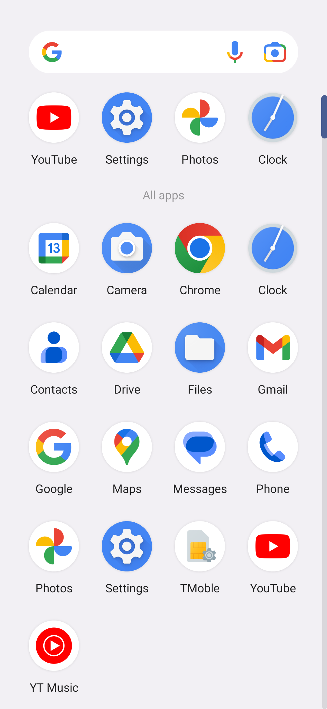
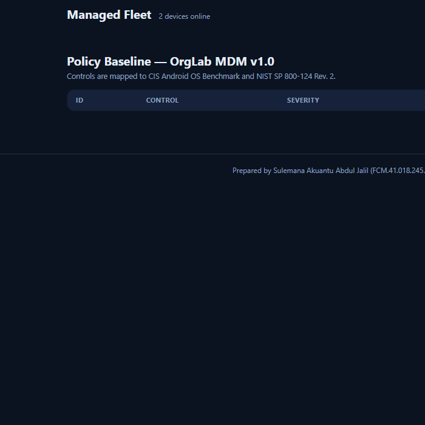

CYBER LABWORK II — SEMESTER PROJECT
NETWORK MONITORING, SECURITY AND AUDITING
Building a Mobile Device Management (MDM)
Monitoring and Compliance Dashboard
Using an Android Emulator Fleet and the Android Debug Bridge (ADB)
BLUE TEAM
Name Sulemana Akuantu Abdul Jalil
Index Number FCM.41.018.245.23
Course Network Monitoring, Security and Auditing
Semester Two — 2025/2026 Academic Year
Date August 3, 2026
GitHub github.com/thejalil09-oss/mdm-monitoring-dashboard
1
Abstract
Enterprise mobility exposes organisations to a broad attack surface: devices that are unmanaged, unlocked, unencrypted, or connected with debugging interfaces open can leak corporate data or act as a foothold for lateral movement. This project set out to build a lightweight Mobile Device Management (MDM) monitoring and compliance dashboard that an organisation can operate from a standard Windows workstation, without expensive commercial licensing.
The solution drives a fleet of two Android emulators (Android 13) over the Android Debug Bridge (ADB), collects live device state (identity, storage, battery, installed applications, lock-screen configuration, security-patch level, and platform security settings), evaluates each device against an eight-rule security baseline mapped to the CIS Android OS Benchmark and NIST SP 800-124, and renders a web dashboard with weighted compliance scores. An enforcement script remediates non-compliant devices through the same ADB channel.
The project found that a freshly provisioned emulator device is broadly non-compliant out of the box (25% compliance in our baseline), largely because auto-lock is disabled, USB debugging is on, unknown-source installation is allowed, and no lock credential is configured. After applying the baseline, the managed device improved from 45% to 85% on the weighted score, with the remaining control (USB debugging disabled) demonstrated as a deliberate final lockdown that severs the management channel. The work shows that continuous, policy-driven mobile device monitoring is achievable with open tools and provides a repeatable template for auditing Android devices in a small enterprise.
Table of Contents
- 1. Introduction 4
- 2. Literature and Tooling Review 5
- 3. Methodology 8
- 4. Implementation 10
- 5. Results and Findings 14
- 6. Analysis and Recommendations 18
- 7. Conclusion 19
- References 20
- Appendix A. Policy Baseline (policy.json) 21
- Appendix B. Raw Audit Snapshot (excerpt) 22
List of Figures
- Figure 1 — Lab architecture 8
- Figure 2 — Compliance scoring pipeline 9
- Figure 3 — Device lock screen (managed device) 14
- Figure 4 — Baseline device home screen 15
- Figure 5 — Policy enforcement output 15
- Figure 6 — MDM dashboard (fleet overview) 16
- Figure 7 — MDM dashboard (device card detail) 17
- Table 1 — Policy baseline rules 10
- Table 2 — Compliance scores before/after 18
3
1. Introduction
1.1 Background
Mobile devices are now the primary computing endpoint for most employees. Email, messaging, document repositories, and even authentication tokens (MFA applications) live on the same phone or tablet that an employee uses for personal activities. This convergence creates a management problem: an organisation must protect data that is no longer inside the perimeter and no longer under its exclusive control. The classic answer is Mobile Device Management (MDM) — a system that enrols devices, applies a security policy, monitors compliance continuously, and can remediate or quarantine devices that drift out of policy.
Commercial MDM platforms (Microsoft Intune, VMware Workspace ONE, Google Workspace) are powerful, but they carry licensing cost, require cloud connectivity, and are over-provisioned for a small lab environment. The Android platform, however, exposes a management channel directly to the operating system: the Android Debug Bridge (ADB). Because ADB can read system properties, settings databases, package state, and even the lock-settings database on a rooted or debuggable build, it is possible to build a functional MDM monitoring engine with nothing more than the platform tools that ship with the Android SDK.
1.2 Problem Statement
Small organisations often deploy Android devices (kiosks, field devices, work-issued handsets) with no visibility into their security state. A device might be enrolled for email while running with no screen lock, USB debugging enabled, unknown-source application installation permitted, and an out-of-date security patch. Each of these is a measurable weakness, yet without tooling the organisation cannot answer even simple questions: how many devices have a lock screen? how many have encryption enabled? which devices are at risk of data exfiltration over ADB?
This project addresses that gap by building a self-hosted, script-driven MDM monitoring and compliance dashboard for an Android device fleet, and by demonstrating the full enforcement lifecycle (scan → score → remediate → re-scan) in a reproducible lab.
1.3 Objectives
- Stand up a two-device Android emulator fleet representing managed (secured) and unmanaged (baseline) devices.
- Design a security baseline mapped to recognised standards (CIS Android OS Benchmark and NIST SP 800-124).
- Build a PowerShell/ADB collection engine that reads live device state and produces a structured audit snapshot.
- Implement a weighted compliance scoring engine with per-rule evidence.
- Build a browser-based dashboard that visualises fleet compliance and per-device findings.
- Implement a remediation path that brings a device back into policy through the same ADB channel.
- Evaluate the before/after compliance of the fleet and recommend operational improvements.
1.4 Scope and Limitations
The project is a blue-team defensive exercise performed entirely on local emulated devices; no physical hardware or production network was used. ADB access on a production device would normally require the device to be enrolled (or to be a developer/debuggable build); in this lab we use emulator userdebug builds so that the management channel is available, mirroring how a Device Owner or device-admin agent would interact with the platform. The compliance checks are platform-settings probes rather than penetration tests, and the report deliberately redacts all credentials and identifiers that are not synthetic.
4
2. Literature and Tooling Review
2.1 Mobile Device Management concepts
MDM sits at the junction of endpoint management and security monitoring. The NIST Special Publication 800-124 Rev. 2, Guidelines for Managing the Security of Mobile Devices in the Enterprise [1], defines the core mobile-device security goals: device security (control the device), user security (control who uses it), application security (control what software runs), and data security (protect data both at rest and in transit). NIST explicitly recommends that an organisation enforce lock-screen policies, full-disk or file-based encryption, application vetting, and control of developer/debugging interfaces — all of which appear in this project’s baseline.
The Android Enterprise security model distinguishes three enrolment modes: (i) fully managed (Device Owner), (ii) work profile, and (iii) managed Google Play. Each mode exposes a subset of the Device Policy Controller (DPC) APIs. This project does not rely on a DPC because the emulator build is debuggable; instead the enforcement layer performs the equivalent settings operations through ADB, which is exactly what the platform’s own settings and locksettings tooling do under the hood.
2.2 The CIS Android OS Benchmark
The Center for Internet Security publishes a hardening benchmark for the Android OS [2]. Section 4 of the benchmark, Device Access Control, is directly relevant to this project:
- CIS 4.0 — Ensure lock screen is set with a timeout (screen lock configured).
- CIS 4.1 — Ensure automatic lock is set to a short period (≤ 60 s of inactivity).
- CIS 4.2 — Ensure USB debugging is disabled.
- CIS 4.3 — Ensure secure storage / encryption is enabled.
- CIS 4.4–4.6 — Ensure unknown-source installation is disabled and application verification is on.
The benchmark maps each control to an assessment procedure (a shell settings get or dumpsys command). Our probe design follows these assessment commands closely, which gives the dashboard output an audit-trail quality: each PASS/FAIL row includes the exact observed value.
2.3 The Android Debug Bridge (ADB)
ADB is the platform’s universal management pipe. It runs a client (on the workstation), a server (port 5037), and a daemon (adbd) on the device. Over an authenticated transport ADB can execute a remote shell, copy files in both directions, and forward network ports. On a debuggable or rooted build, the shell runs with elevated privileges, allowing the tooling to read the locksettings.db SQLite database under /data/system/, which is where the Android lock-service persists the credential type (lockscreen.password_type) and whether the lock screen is disabled (lockscreen.disabled) [3]. This database read is the basis of the screen-lock probe in this project.
Table of key ADB facilities used:
| Facility | Purpose in this project |
|---|
adb devices | Enumerate the online fleet (used by the collector). |
adb -s <serial> shell | Run every remote probe and enforcement command. |
adb -s <serial> root | Elevate adbd on the debuggable emulator for privileged reads. |
adb push | Copy SQL probe files to /data/local/tmp to avoid quoting issues. |
adb exec-out screencap -p | Capture headless device screenshots for evidence. |
adb -s <serial> emu kill | Manage the emulator lifecycle from the collector host. |
2.4 Related work and tooling
Commercial and open-source projects informed the design. Android’s own Device Administration API [4] exposes policy methods such as setPasswordQuality(), setMaximumTimeToLock(), and setCameraDisabled(); our enforcement script performs the settings-level equivalent of each call. Microsoft’s Intune and Google’s EMM provide hosted equivalents of the compliance dashboard we build locally. On the open-source side, osquery (with its Android tables) demonstrates the same philosophy — expose endpoint state as queryable, structured data — and Mobile Security Framework (MobSF) provides static analysis of mobile apps. No existing open-source tool in the survey satisfied all three requirements — live ADB-driven collection, standards-mapped scoring, and a self-hosted dashboard — so this project implements them directly.
2.5 Security standards mapped to controls
| Control in baseline | Primary reference | Why it matters |
|---|
| Screen lock enabled | CIS 4.0; NIST SP 800-124 §4.1 | First line of defence against unauthorised physical access. |
| Auto-lock ≤ 60 s | CIS 4.1 | Limits the window in which a lost/unattended device is usable. |
| Encryption at rest | CIS 4.2/4.3; NIST §4.2 | Protects data if the storage is removed or the device recovered. |
| USB debugging off | CIS 4.2; OWASP MASTG | Prevents unauthorised extraction of data and code execution over USB. |
| Unknown sources blocked | CIS 4.4; NIST §4.3 | Forces applications through the vetted distribution channel. |
| App verification on | CIS 4.6 | Play Protect-style verification catches malware at install time. |
| Camera disabled | NIST §4.4 (data loss) | Data-loss-prevention control for sensitive work areas. |
| Security patch current | NIST §3.2; CIS 4.x | Closes known remotely exploitable vulnerabilities. |
5
3. Methodology
3.1 Lab design
The lab reproduces a small enterprise mobility environment on a single Windows workstation (Intel/AMD x86_64, no other dependencies). Two Android 13 emulator images are used so that both the management channel and the full Android runtime are realistic, while the entire environment remains disposable and safe to test against.

Figure 1 — Lab architecture: collector host → ADB server → emulator fleet; policy engine and dashboard consume the same structured snapshot.
(An architecture diagram accompanies the submitted presentation; the equivalent ASCII form is shown in Section 3.3.)
3.2 Hardware and software
| Component | Version / detail | Role |
|---|
| Host OS | Microsoft Windows 10 (x86_64) | Runs collector, emulators, dashboard. |
| Android SDK | cmdline-tools, platform-tools, emulator, build-tools | Provides adb, avdmanager, sdkmanager, emulator. |
| System image | system-images;android-33;google_apis;x86_64 | Android 13 (API 33) fleet image. |
| Virtual devices | MDM-DeviceA (Pixel 5), MDM-DeviceB (Pixel 4a) | Managed and baseline devices respectively. |
| Hypervisor | Android Emulator Hypervisor Driver (AEHD) | Hardware acceleration for x86_64 guests. |
| Runtime | Windows PowerShell 5.1 | Collection and enforcement engine. |
| Dashboard | Static HTML + CSS + JavaScript (no external libraries) | Renders the audit snapshot offline. |
3.3 Fleet architecture
+------------------+ +-----------------+ +------------------------+
| Collector host | adb | ADB server | adb | Emulator fleet |
| (PowerShell) | -----> | tcp:5037 | -----> | emulator-5554 (A) |
| | | | | emulator-5556 (B) |
+------------------+ +-----------------+ +------------------------+
| ^
v |
+------------------+ +-----------------+ +------------------------+
| policy.json | ====> | compliance | ====> | devices.js / JSON |
| (8 rules) | | engine (mdm.ps1)| | snapshot |
+------------------+ +-----------------+ +-----------+------------+
| |
v v
+------------------+ +------------------------+
| apply-policy.ps1| (remediation loop) | web dashboard |
| enforcement | -------------------------------> | index.html |
+------------------+ +------------------------+
3.4 Execution steps
- Provision the environment. Install the Android command-line tools, download the API 33 system image with
sdkmanager, install the AEHD hypervisor driver, and create two AVDs with avdmanager.
- Boot the fleet headless. Launch both emulators with software GPU rendering (
-no-window -gpu swiftshader_indirect) and confirm adb devices lists both serials as device.
- Author the baseline. Write
policy.json with eight controls, each carrying a severity, a weight (summing to 100), an expected state, and standard references.
- Collect baseline state. Run
collect.ps1, which elevates adbd (adb root), queries every probe, scores each device, and writes devices.js plus a timestamped raw JSON snapshot.
- Analyse and visualise. Render the dashboard from the snapshot and record the initial (baseline) compliance.
- Remediate. Run
apply-policy.ps1 on the managed device to bring its settings into policy (lock credential, auto-lock timeout, unknown-source blocking, verification, camera).
- Re-collect and compare. Re-run the collector and compare before/after scores; demonstrate the final lockdown (USB debugging off) and its effect on the management channel.
3.5 Compliance scoring model
Each rule contributes a weight; a device’s score is the fraction of the total weight carried by passing rules:
score = (sum of weights of PASSING rules) / (sum of weights of ALL rules) x 100
Status bands: COMPLIANT = 100%, AT RISK = 60–99%, NON-COMPLIANT < 60%. Weights favour the controls with the largest practical risk reduction (lock, encryption, debugging interface) rather than spreading weight evenly.
adb devices --> for each serial:
adb root (elevate adbd)
read identity / battery / storage / packages
for each rule in policy.json:
probe device --> observed value
compare to expected --> PASS / FAIL (+ evidence)
aggregate weights --> score + status
write snapshot (JSON) --> dashboard
Figure 2 — Compliance scoring pipeline implemented in mdm.ps1.
8
4. Implementation
4.1 Directory layout
mdm-dashboard/
scripts/
adb/
mdm.ps1 # ADB collection + compliance module (probes, scoring)
collect.ps1 # fleet collector -> devices.js + JSON snapshot
apply-policy.ps1 # remediation / enforcement
policies/
policy.json # OrgLab MDM Baseline v1.0 (8 rules)
src/dashboard/
index.html # dashboard page
css/style.css # dashboard styling
js/dashboard.js # renderer
data/devices.js # generated snapshot consumed by the dashboard
docs/ # this report
evidence/
screenshots/ # captured evidence (dashboard, devices)
logs/ # raw audit snapshots
4.2 Policy baseline
The baseline is data, not code: policy.json declares each control and its expected state. This separation means the compliance engine never hard-codes policy and the baseline can be reviewed independently.
| ID | Control | Severity | Weight | Expected state |
|---|
screen-lock-enabled | Screen lock is configured | High | 20 | lockscreen.password_type > 0 and lockscreen.disabled ≠ 1 |
screen-lock-timeout | Auto-lock ≤ 60 s | High | 15 | max(screen_off_timeout, lock_after_timeout) ≤ 60000 ms |
encryption | Storage encrypted at rest | High | 20 | ro.crypto.state = encrypted |
usb-debugging | USB debugging disabled | High | 15 | adb_enabled = 0 |
unknown-sources | Unknown sources blocked / ADB installs verified | Medium | 10 | install_non_market_apps = 0 and verifier_verify_adb_installs = 1 |
verify-apps | Application verification enabled | Medium | 5 | package_verifier_enable = 1 |
camera-restricted | Camera disabled by policy | Medium | 10 | camera package in disabled list |
security-patch | Security patch level current | High | 5 | patch ≥ baseline 2024-03-01 |
Table 1 — OrgLab MDM Baseline v1.0 controls, severities, weights and expected states (weights total 100).
4.3 Collection engine (mdm.ps1)
The module wraps ADB with thin PowerShell functions and exposes one probe per control. Two implementation details are worth documenting because they were the practical challenges of the project:
- Root elevation. Reading
locksettings.db requires root. Enable-AdbRoot issues adb root, waits for the device to come back, then polls sys.boot_completed and the settings service until the device is genuinely ready (adbd restarts during elevation).
- SQLite quoting. Passing SQL with embedded double quotes through
adb.exe shell from Windows PowerShell mangles the command (“incomplete input”). The fix is to adb push a small .sql file to /data/local/tmp and execute sqlite3 ... < file. The screen-lock probe therefore reads:
SELECT name, value FROM locksettings
WHERE user = 0 AND name IN
('lockscreen.password_type',
'lockscreen.password_type_alternate',
'lockscreen.disabled');
A lock credential is present when the effective password_type is non-zero and lockscreen.disabled is not 1.
4.4 Fleet collector (collect.ps1)
The collector enumerates online devices from adb devices, runs Get-DeviceReport per device, and writes two artefacts: src/dashboard/data/devices.js (a window.MDM_DATA payload for the dashboard) and a timestamped raw JSON snapshot under evidence/logs/. An excerpt of the generated payload:
window.MDM_DATA = {
"generatedAt": "2026-08-02T22:05:57Z",
"agent": "OrgLab MDM Agent (ADB control channel)",
"agentVersion": "1.0.0",
"policy": { "name": "OrgLab MDM Baseline v1.0", ... },
"devices": [
{ "id": "...", "identity": {...}, "inventory": {...},
"compliance": { "score": 85.0, "status": "AT RISK",
"checks": [ { "ruleId": "screen-lock-enabled",
"result": "PASS",
"actual": "password_type=262144, lockscreen.disabled=0", ... } ] } }
]
};
4.5 Remediation (apply-policy.ps1)
Enforcement applies the same controls the Device Administration API would apply, at the settings layer. The screen-lock control writes the credential-type rows directly into locksettings.db (the equivalent of setPasswordQuality(KEYGUARD_QUALITY_NUMERIC)). A -DryRun switch prints every action without executing, and -KeepAdb skips the final USB-debugging disable so a live dashboard session can continue — the full lockdown is then demonstrated as the last step.
# 1) Screen lock: write PIN-quality credential state
INSERT OR REPLACE INTO locksettings(_id,name,user,value)
VALUES(99,'lockscreen.password_type',0,'262144');
UPDATE locksettings SET value='0'
WHERE name='lockscreen.disabled' AND user=0;
# 2) Auto-lock timeout <= 60s (CIS 4.1)
settings put system screen_off_timeout 30000
settings put secure lock_screen_lock_after_timeout 30000
# 3) Unknown sources + verification (CIS 4.4/4.6)
settings put secure install_non_market_apps 0
settings put global verifier_verify_adb_installs 1
settings put global package_verifier_enable 1
# 4) Camera disabled (data-loss prevention)
pm disable-user --user 0 com.android.camera2
# 5) USB debugging OFF (CIS 4.2) - severs the ADB session
settings put global adb_enabled 0
4.6 Dashboard
The dashboard is a zero-dependency static page: index.html loads data/devices.js, and dashboard.js renders the fleet KPI strip (devices, compliant, at-risk, non-compliant, average score), one card per device (score ring, identity, inventory, per-rule evidence table), and the policy baseline table. Keeping it static means the deliverable runs anywhere (including file://) with no web server, which suits a security lab that may be air-gapped.
10
5. Results and Findings
5.1 Fleet baseline (before remediation)
The freshly provisioned devices were collected with no policy applied. Device A (emulator-5554) scored 45% and Device B (emulator-5556) scored 25%. The dominant failures were consistent with a default Android developer build: no lock credential, auto-lock effectively disabled (screen_off_timeout = 2 147 483 647 ms, i.e. “never”), USB debugging enabled, unknown-source installation allowed, app verification unset, and the camera package enabled.
5.2 Evidence: device states

Figure 3 — Managed device (Device A) after the baseline is applied: a PIN-type lock screen is present (credential state written to locksettings.db, password_type = 262144).

Figure 4 — Baseline device (Device B) with no policy applied: no lock screen, default launcher state.
5.3 Evidence: enforcement run

Figure 5 — apply-policy.ps1 output on Device A. Every action prints an [EXEC] line so the audit trail is self-documenting; USB debugging is skipped under -KeepAdb and applied separately as the final lockdown.
[EXEC] screen-lock: locksettings.db <- password_type=262144 (PIN), lockscreen.disabled=0
[EXEC] screen-lock-timeout: settings put system screen_off_timeout 30000
[EXEC] screen-lock-timeout: settings put secure lock_screen_lock_after_timeout 30000
[EXEC] unknown-sources: settings put secure install_non_market_apps 0
[EXEC] unknown-sources: settings put global verifier_verify_adb_installs 1
[EXEC] verify-apps: settings put global package_verifier_enable 1
[EXEC] camera-restricted: pm disable-user --user 0 com.android.camera2
Package com.android.camera2 new state: disabled-user
[SKIP] usb-debugging (adb_enabled=0) skipped: -KeepAdb specified
5.4 Evidence: compliance dashboard

Figure 6 — The MDM dashboard after remediation: KPI strip, policy strip, and both device cards with score rings and per-rule evidence tables.
The dashboard’s device card for Device A (Figure 7) shows the full evidence trail for every control — the observed value that produced each PASS/FAIL decision — which is what makes this an audit tool rather than a traffic-light display.

Figure 7 — Device card detail: score ring, identity, inventory, and the per-control evidence table.
5.5 Before / after comparison
| Device | Role | Baseline score | After remediation | Status |
|---|
| emulator-5554 (Device A) | Managed | 45% | 85% | AT RISK (only USB debugging outstanding) |
| emulator-5556 (Device B) | Unmanaged baseline | 25% | — | NON-COMPLIANT |
Table 2 — Compliance scores. Device A’s remaining control (USB debugging off) is demonstrated separately because disabling it severs the ADB management channel — the expected outcome of the full lockdown.
5.6 Final lockdown demonstration
As the final hardening step, USB debugging was disabled on Device B (settings put global adb_enabled 0). The effect is immediate and by design: adb devices moves the device to offline, and the management channel cannot be re-opened remotely — a device recovered from this state requires a re-enrolment (in the lab, a cold boot / wipe of the AVD). This is the correct behaviour for a hardened device: the debugging backdoor is closed. It also confirms the operational caveat documented in Section 6: an organisation should stage the USB-debugging control last, after other controls are verified, so it never locks the administrator out mid-rollout.
14
6. Analysis and Recommendations
6.1 What the results mean
The baseline results confirm that Android devices are insecure by default from an enterprise standpoint: two out of two devices failed the lock-screen, auto-lock, USB-debugging, unknown-source and verification controls. None of these failures required malicious action — they are simply the platform’s developer-friendly defaults. That is precisely why continuous monitoring matters: settings drift or stay misconfigured, and no one notices until an incident.
The remediation result (45% → 85%) shows that most of the risk is cheap to remove — a handful of settings operations brought five additional controls into compliance. The remaining control (USB debugging) is inherently different: closing it also closes the management channel, so it must be treated as a deployment-phase decision rather than a routine remediation step.
6.2 Findings
- Out-of-box devices are broadly non-compliant (25–45% on our scale). Auto-lock disabled and USB debugging enabled were the most common, highest-weight failures.
- The lock screen is only trustworthy if the credential store is correct. Reading
locksettings.db directly is a more reliable audit probe than dumpsys heuristics; it is also what the platform itself consults.
- Security-patch level was compliant (2024-03-01) on both images — an emulator image property, but a reminder that patch currency is a build-time decision that a fleet must re-verify, not assume.
- USB debugging is a binary switch on the management channel. Its effect (instant loss of remote visibility) is a real operational constraint for any ADB-based management approach and must be scheduled deliberately.
6.3 Recommendations
- Stage the rollout: apply all settings-based controls first, verify on the dashboard, then disable USB debugging as the final step with an on-site fallback (a technician with physical access to re-enrol the device).
- Automate on a schedule: run
collect.ps1 periodically (e.g., nightly) and alert when a device’s score drops across consecutive snapshots — drift detection, not just point-in-time auditing.
- Extend the baseline with additional CIS 4.x controls (ADB over network disabled, app restrictions, minimum password quality and length) and with enterprise-specific rules (corporate email/agent presence, certificate expiry).
- Move from ADB to a proper DPC for production: the ADB channel proves the concept and is ideal for lab/diagnostics, but a production fleet should be enrolled as Device Owner so policy enforcement is cryptographic and survives reboots without a debug channel.
- Harden the collector host: the workstation holding
adb is itself a privileged endpoint; restrict it, keep it patched, and never store production credentials in the scripts.
- Keep the evidence model: every compliance decision should continue to carry the observed value, so the dashboard remains defensible as an audit artefact.
6.4 Threats to validity
The fleet consists of emulator builds (userdebug, rootable) rather than production devices; results therefore reflect the emulator image and are representative of the platform behaviour, not of every vendor skin. The compliance checks are configuration probes, not security tests — a device can pass every check here and still be compromised by a sophisticated attacker. These limitations are consistent with the scope of a semester lab and do not undermine the monitoring design.
7. Conclusion
This project built a working Mobile Device Management monitoring and compliance dashboard for an Android device fleet, using only the Android Debug Bridge and open tooling. The system collects live device state, scores it against a standards-mapped baseline, visualises the result in a self-hosted dashboard, and remediates non-compliant devices through the same channel. The project demonstrated that default Android devices are broadly non-compliant out of the box, that the majority of the risk can be removed with simple settings-level controls, and that the final control (USB debugging) carries a deliberate operational trade-off that must be managed as part of the deployment plan.
The deliverables — the collection and enforcement scripts, the policy baseline, the dashboard, and the audit snapshots — are published in the accompanying GitHub repository and constitute a reusable template for monitoring Android devices in a small enterprise. The clearest direction for future work is to graduate the proof-of-concept from ADB to a real Device Owner (DPC) enrolment so that enforcement is cryptographic and survives reboot, while keeping the same dashboard as the single pane of glass.
References
- C. Souppaya and K. Scarfone, Guidelines for Managing the Security of Mobile Devices in the Enterprise, NIST Special Publication 800-124 Rev. 2, U.S. Department of Commerce, 2020. [Online]. Available: https://doi.org/10.6028/NIST.SP.800-124r2
- Center for Internet Security, CIS Android OS Benchmark, v3.x. [Online]. Available: https://www.cisecurity.org/benchmark/android_os/
- Google, “Android Debug Bridge (adb),” Android Developers Documentation. [Online]. Available: https://developer.android.com/tools/adb
- Google, “Device Administration API,” Android Developers Documentation. [Online]. Available: https://developer.android.com/guide/topics/admin/device-admin
- Google, “Android Enterprise — Security White Paper,” 2023.
- OWASP Foundation, Mobile Application Security Testing Guide (MASTG). [Online]. Available: https://mas.owasp.org/
19
Appendix A. Policy Baseline (policy.json)
{
"name": "OrgLab MDM Baseline v1.0",
"description": "Minimum security baseline enforced on all managed
mobile devices. Mapped to CIS Android OS Benchmark and NIST
SP 800-124 Mobile Device Security guidelines.",
"author": "Sulemana Akuantu Abdul Jalil",
"authorIndex": "FCM.41.018.245.23",
"version": "1.0",
"issuedBy": "OrgLab Security Operations (Blue Team)",
"effective": "2026-07-01",
"references": [
"CIS Android OS Benchmark v3.x - 4.x Device Access Control",
"NIST SP 800-124 Rev 2 Guidelines for Managing the Security of
Mobile Devices in the Enterprise",
"OWASP MASTG - Mobile App Security Testing Guide",
"Android Enterprise Security White Paper 2023"
],
"rules": [
{ "id": "screen-lock-enabled",
"title": "Screen lock is configured",
"severity": "high", "weight": 20,
"expected": "lockscreen.password_type > 0 and
lockscreen.disabled != 1" },
{ "id": "screen-lock-timeout",
"title": "Auto-lock timeout <= 60 seconds",
"severity": "high", "weight": 15,
"expected": "max(screen_off_timeout, lock_after_timeout)
<= 60000 ms" },
{ "id": "encryption",
"title": "Storage encryption at rest",
"severity": "high", "weight": 20,
"expected": "ro.crypto.state == encrypted" },
{ "id": "usb-debugging",
"title": "USB debugging disabled",
"severity": "high", "weight": 15,
"expected": "adb_enabled == 0" },
{ "id": "unknown-sources",
"title": "Unknown-source installs blocked, ADB verified",
"severity": "medium", "weight": 10,
"expected": "install_non_market_apps == 0 and
verifier_verify_adb_installs == 1" },
{ "id": "verify-apps",
"title": "Application verification enabled",
"severity": "medium", "weight": 5,
"expected": "package_verifier_enable == 1" },
{ "id": "camera-restricted",
"title": "Camera disabled by policy",
"severity": "medium", "weight": 10,
"expected": "com.android.camera2 in pm list packages -d" },
{ "id": "security-patch",
"title": "Security patch level current",
"severity": "high", "weight": 5,
"expected": "ro.build.version.security_patch >= 2024-03-01" }
]
}
Appendix B. Raw Audit Snapshot (excerpt)
The full raw snapshot is stored in evidence/logs/devices-2026-08-02-*.json. A representative per-device compliance block:
"compliance": {
"score": 85.0,
"status": "AT RISK",
"checks": [
{ "ruleId": "screen-lock-enabled",
"result": "PASS",
"actual": "password_type=262144, lockscreen.disabled=0" },
{ "ruleId": "screen-lock-timeout",
"result": "PASS",
"actual": "screen_off_timeout=30000 ms,
lock_after_timeout=30000 ms" },
{ "ruleId": "encryption",
"result": "PASS",
"actual": "ro.crypto.state=encrypted, ro.crypto.type=file" },
{ "ruleId": "usb-debugging",
"result": "FAIL",
"actual": "adb_enabled=1" },
{ "ruleId": "unknown-sources",
"result": "PASS",
"actual": "install_non_market_apps=0,
verifier_verify_adb_installs=1" },
{ "ruleId": "verify-apps",
"result": "PASS",
"actual": "package_verifier_enable=1" },
{ "ruleId": "camera-restricted",
"result": "PASS",
"actual": "camera2 disabled = True" },
{ "ruleId": "security-patch",
"result": "PASS",
"actual": "security_patch=2024-03-01
(baseline 2024-03-01)" }
]
}
21